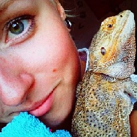
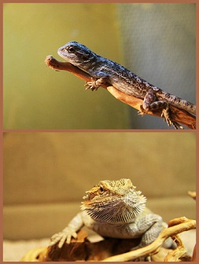

itzy's blogg
Alastair
Fick i uppgift att göra ett blogginlägg med bild, så jag tänkte, vad bättre att skriva om än min sambo, skäggagamen Alastair. Jag hade länge tänkt mig att skaffa en skäggagam, jag har för mig det var på någon reptilmässa jag såg en söt varelse och föll direkt. För tillfället hade jag ocv min dåvarande pojkvän en kameleont vid namn Toruk.
Så en dag i november för två år sedan blev det en vända till djuraffären, där jag hittade min lilla älskling och föll direkt. Han är mitt första egna djur, som JAG är ensam ägare till och jag älskar det. Han ger mig sällskap i ensamma stunder och han är min familj.
Han är fortfarande relativt ung, ca. 2 år, så han har ännu inte blivit vegeterian (som jag längtar). Skäggagamer lever runt 10 år så jag hoppas på att ha många år kvar med honom. Som 7-åring bör han bli mer och mer vegeterian, men för tillfället äter han syrsor och zophobas.
Under vinterhalvåret ligger han mest i halvdvala så då är han mindre roligt sällskap, nu under sommaren gillar han att sitta i mitt knä ute i gräset, eller sola sig innanför glasdörren hemma hos oss.
Skäggagamer, eller Pogona vitticeps som de heter på latin, kommer ursprungligen från Australien. Det är en av de mest sociala ödlor man kan ha som husdjur, det sägs (jag vet inte om det stämmer) att det är den enda ödlan som kan känna igen sin ägares röst. En annan cool sak med dessa små djur är att de har ett "tredje öga" mitt på huvudet, detta öga kan se skuggor, vilket är väldigt bra då en av skäggagamens största fiender är rovfåglar.
Min Alastair har aldrig en försökt bita mig, även om jag ibland råkat överraska honom eller gjort något han inte tycker om. Men leka tuff, det är han bra på. Då lägger han kroppen snett på sidan och blåser upp sig, hela hakan, "skägget", blir kolsvart och han tror han är oerhört farlig. När jag väl plockar upp honom i de situationerna så gör han ingenting ändå utan blir helt lugn igen.
Översta bilden till vänster är från när jag precis hade hämtat honom, då var han inte så stor, den under är efter nästan ett år och bilden till höger är tagen kanske nyligen.
Video
Här är en trailer till Big Buck Bunny:
Video courtesy of (c) copyright 2008, Blender Foundation / www.bigbuckbunny.org
Panda
Min fina panda, gjord i vektor-grafik:
![]()
2014-09-03
Tjena bloggen, i kursen Webbteknisk introduktion har jag fått till uppgift att skapa mig en blogg. Så här är mitt första inlägg i vad jag hoppas kommer bli en oerhört awesome resa.